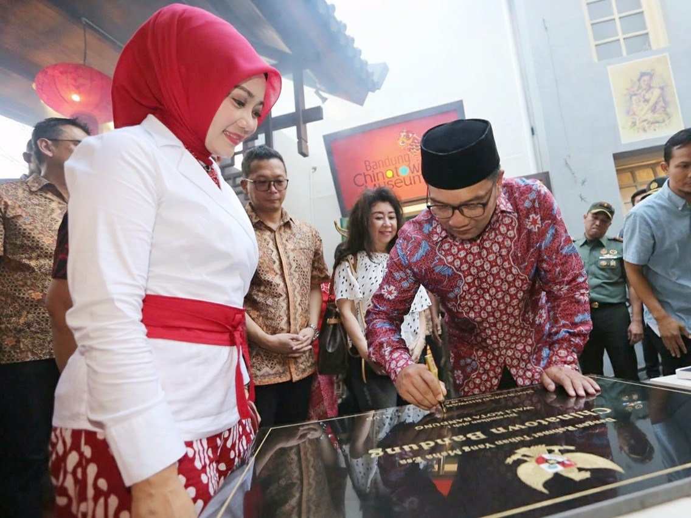
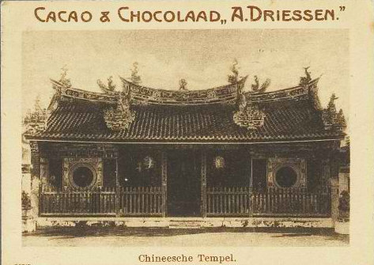
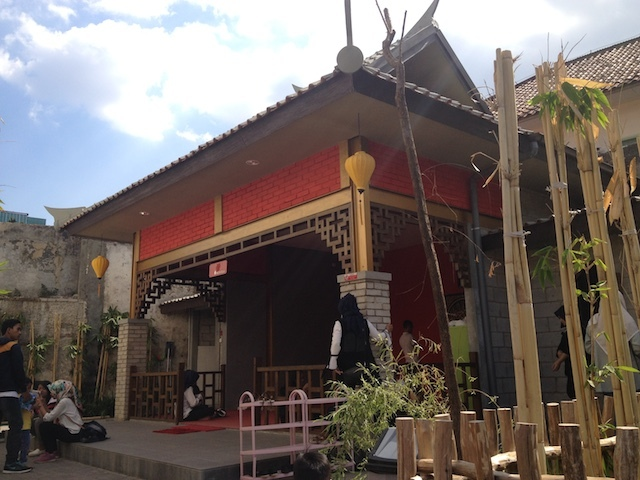
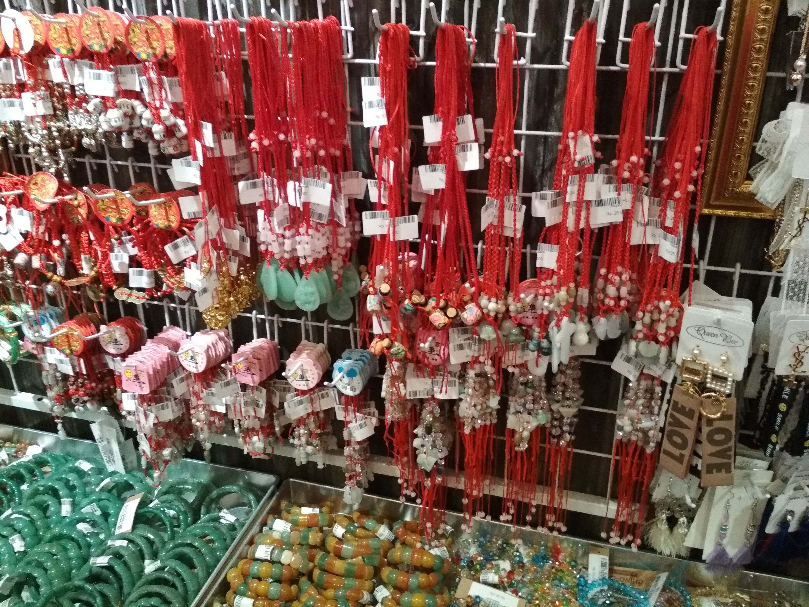
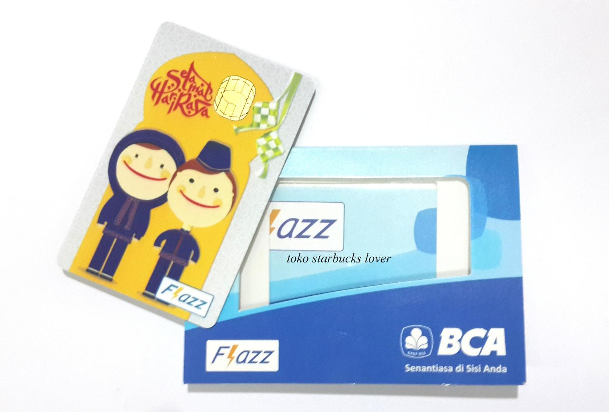
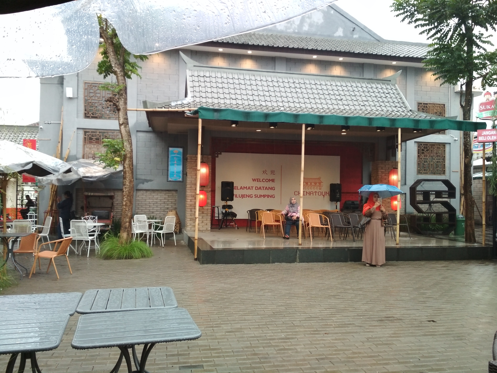

Tersedia banyak mukena, sarung,
sajadah dan al-quran
About Us ChinaTown
ChinaTown atau disebut juga Pecinan adalah tempat pemukiman orang cina.
Didirikan hari Minggu tanggal 20 Agustus 2017.
Tujuan dibangunnya ChinaTown adalah untuk memperkuat eksistensi Kota Bandung yang menghargai keberagaman. Dimana yang diwujudkan dalam toleransi beragam dan kegiatan sosial sehari-hari serta dalam kegiatan ekonomi.
.

Sejarah

Bangsa Tionghoa pertama kali datang ke Indonesia melalui ekspedisi Laksamana Haji Muhammad Cheng Hoo (1405-1433). Ketika itu, Cheng Hoo berkeliling dunia untuk membuka jalur sutra dan keramik. Cheng Hoo pun pernah menginjakkan kaki di pulau Jawa. Sejak ekspedisi itu, berangsur-angsur bangsa Tionghoa berdatangan dan membangun pecinan di beberapa daerah di pulau Jawa. Kuncen Bandung, Haryoto Kunto dalam Wajah Bandoeng Tempo Doeloe (Granesia, 1984), menuturkan bahwa sebagian warga Tionghoa di Pulau Jawa pindah ke Bandung ketika terjadi perang Diponegoro (1825). Setiba di Bandung, sebagian besar tinggal di kampung Suniaraja dan sekitar Jalan Pecinan lama. Mereka menetap dan mencari nafkah disana. Pada tahun 1885 mereka mulai menyebar ke Jln. Kelenteng. Pecinan di Jln. Kelenteng di tandai dengan pembangunan Vihara Satya Budhi.
Menurut keterangan pengurus Vihara Satya Budhi, pecinan di Bandung seperti rumah-rumah toko pada umumnya, tak ada asesoris khusus seperti pecinan di daerah lain di Indonesia. Warganya pun beragam, tak hanya keturunan Tionghoa.
Pecinan berkembang pesat disekitar Pasar Baru sejak 1905. Umumnya warga Tionghoa menjadi pedagang.
Tan Sioe How yang mendirikan kios jamu ”Babah Kuya” di Jln. Belakang Pasar, tahun 1910 merupakan salah satu perintis toko di kawasan itu.
Budayawan Tionghoa, Drs. Soeria Disastra, mengatakan bahwa pecinan memang ada, tapi tidak ada batasan. Maksudnya, hubungan warga Tionghoa dan Pribumi sekitar abad ke-19 dekat sekali. Akan tetapi, Belanda tidak senang melihat kedekatan itu.
Belanda pun memisahkan Tionghoa dan Pribumi dari segi ekonomi. Warga Tionghoa dijadikan perantara perekonomian bangsa Eropa dan pribumi. Menjual rempah-rempah dari pribumi ke Belanda untuk di ekspor. Lama kelamaan kedekatan itu pun memudar.
Selain di Pasar Baru, kawasan pecinan juga tumbuh di Suniaraja dan Citepus tahun 1914. Setiap pecinan dipimpin oleh Wijkmeester. Wijkmeester untuk daerah Suniaraja adalah Thung Pek Koey, sedangkan untuk daerah citepus Tan Nyim Coy. Wijkmeester di pimpin oleh seorang Luitennant der Chineeschen. Di Bandung, Luitennant-nya adalah Tan Djoen Liong (H. Buning, ”Maleische Almanak”, 1914).
Para pemimpin Tionghoa itu diabadikan di beberapa tempat misalnya di sekitar jalan Chinees-Wijk Citepus, ada pula Gang Goan Ann di Andir dan Jap Lun.
Sie Tjoe Liong menjelaskan, ketika peristiwa Bandung Lautan Api (1946). Kios-kios di Pasar Baru dibakar tentara Belanda. Wilayah Bandung terpisah menjadi bagian utara dan selatan. Kedua wilayah dibatasi rel kereta api yang membujur dari Cimahi hingga Kiara Condong. Wilayah utara dikuasai Belanda, sedangkan selatan oleh pribumi dan warga asing.
Akibat peristiwa itu, warga Tionghoa mengungsi ke kawasan Tegalega, Kosambi, Sudirman, dan Cimindi. Dengan demikian, dari Pasar Baru, kawasan pecinan meluas ke daerah-daerah tersebut. Warga Tionghoa dan pribumi pun bersatu kembali. Belanda menyebut kawasan ini “Groote Post Weg”.
Pada masa pemerintahan Orde Lama (1945-1968), pemerintah membatasi bidang ekonomi dan politik. Akan tetapi, menurut Soeria Disastra, dari segi kebudayaan pemerintah membuka pintu lebar-lebar. Lain lagi dengan pemerintahan orde baru (1968-1998), warfa Tionghoa mengalami pembatasan di segala bidang, kecuali ekonomi. Lagi-lagi, jurang pemisah itu pun muncul lagi.
Pada zaman reformasi (1998-2008), kehidupan sudah lebih baik. Kebebasan yang diberikan mencakup hampir di segala bidang. ”pengakuan Imlek sebagai libur nasional adalah hal yang sangat berarti bagi kami,” kata Soeria.
Saat ini, daerah Pecinan di Bandung semakin luas meliputi Jln. Pasar Baru, Jln. ABC, Jln. Banceuy, Jln. Gardu Jati, Jln. Cibadak dan Jln. Pecinan Bandung. Namun, Sie Tjoe Liong berpesan agar warga pribumi dan Tionghoa tetap akur.
”Sekarang mah ga ada pecinan teh. Sudah berbaur. Interaksi antara warga Tionghoa dan pribumi telah berlangsung lama. Kita adalah bangsa Indonesia,” kata Soeria Disastra.
Mendengar kata Cina akan terbesit langsung dalam benak banyak orang termasuk penulis tentang karakter fisik orang cina yang tidak lain adalah berkulit kuning, mata sipit, dan berambut hitam lurus. Selanjutnya hal itu diikuti dengan kenyataan bahwa bangsa cina unggul dalam bidang perekonomian, anda tentunya pernah mendengar pepatah lokal yang menyatakan:
“orang cina mah palalinter dagang nu matak beunghar (orang cina itu pintar dagang, sehingga mereka kaya)”
Pecinan merupakan perkampungan cina yang sengaja dikonstruksi oleh orang walanda berdasarkan konstruksi ras sosialnya, dengan tujuan untuk menekan kekuatan masyarakat Cina tersebut sehingga mampu diatur dengan mudah oleh pihak Kolonis Belanda.
Lebih mengejutkan lagi, pihak walanda sendiri dengan briliannya telah menerapkan sistem tersebut bukan hanya terhadap masyarakat cina (Tiong Hoa) namun juga kepada masyarakat timur asing yang diisi oleh warga Arab, India, dan ras berwarna lainnya.
Ide yang sangat luar biasa bukan? Mengatur sistem sosial dengan memisahkan masyarakat berdasarkan rasnya masing-masing, keuntungan dari sistem ini selain untuk mempermudah control, namun juga untuk mengisolasi masyarakat tersebut dari etnis lainnya, karena jika terjadi proses pembauran antara masyarakat etnis satu dengan etnis lainnya, dikhawatirkan akan menimbulkan rasa sepenanggungan yang muncul akibat kesamaan terjajah oleh pihak walanda. Jika sudah begitu, akan sulit sekali bukan mengatasi gelombang pemberontakan terhadap penjajahan walanda.
Fakta berikutnya bahwa masyarakat Cina datang ke Parijs van Java melalui perniagaan merupakan hal yang tak terbantahkan, maka dengan cerdik pemerintah walanda memisahkan keberadaan mereka dari pribumi dan masyarakat timur asing, melokalisasi mereka di daerah-daerah konsentrasi (khusus untuk Bandung, ini terbentang di sekitar jalan Banceuy sampai jalan klenteng), padahal jelas-jelas mereka telah membantu pemerintah walanda dalam bidang perekonomian. Sekali lagi fakta sejarah menunjukan bahwa masyarakat Cina telah unggul di bidang ekonomi sejak dahulu kala.
Hal lainnya yang sangat identik dengan masyarakat Cina adalah kepercayaan mereka terhadap dewa-dewa dan dunia setelah kematian, temasuk proses reinkarnasi. Dimana hal tersebut telah diatur dalam ketetapan yang mereka yakini berputar layaknya roda. Namun kepercayaan masyarakat Cina di Indonesia telah mengalami proses sinkreitisme dengan Budha.
Ini bukanlah tanpa sebab, hal ini terjadi tidak lain karena kebijakan Orde baru dengan jelas melarang segala jenis aktivitas berbau ‘Cina’ yang sebagian orang yakini sebagai indikasi ‘cina phobia’. Inipun menimbulkan polemik berkepanjangan, sebab kebijakan tersebut menimbulkan Gap antara pribumi dan masyarakat keturunan Cina. Dampak lainnya adalah kepercayaan mereka pun (re: konghucu) dilarang. Dalam hal ini, Budha sebagai salah satu dari Agama yang diakui di Indonesia memberikan ‘sanctuary’ atau perlindungan berupa keleluasaan kepada masyarakat Cina untuk beribadah di dalam Vihara (tempat peribadatan orang Budha).
Sisa-sisa sinkreitisme masih terlihat jelas sampai saat ini, tengoklah Klenteng atau Vihara di Indonesia, contohnya klenteng Hiap Thian Kiong di Bandung yang terletak di Jalan klenteng. Ketika berkeliling seputaran klenteng tersebut jangan terkejut bila menemukan patung Bodhisatva (nama lain Sidharta Gautama) berada disana, itulah bukti nyata dari proses sinkreitisme antara Konghuchu dan Cina.
Sampai saat inipun sisa-sisa peninggalan masyarakat cina terdahulu di Parijs van Java masih terlihat jelas, sepanjang jalan banceuy, jalan klenteng, pun asia afrika, masih dijumpai rumah-rumah tua yang dihuni oleh orang Cina, dapat dipastikan pula bahwa mereka telah menghuni rumah tersebut dalam waktu lama dengan sistem herediter (turun temurun) dari sang leluhur.
Sehingga ketika tradisi imlek dirayakan, maka dapat dipastikan daerah-daerah yang telah disebutkan tadi menjadi pusat perhelatan hari raya agung untuk masyarakat Cina tersebut. Mereka hidup rukun saling menghormati, menghargai tanah yang mereka pijak, dan mengaku bahwa mereka pun berkebangsaan Indonesia.
Dari sedikit penjelasan diatas dapat terlihat betapa jelasnya isu akan “china phobia” yang pernah ada atau bahkan masih ada sampai saat ini. Seperti telah dipaparkan sebelumnya, ini bisa jadi merupakan opini publik yang terbentuk berdasarkan konstruksi sosial yang dibuat secara politis. Namun tak perlu jauh-jauh menganalisa sampai ranah tersebut, karena yang diperlukan disini adalah kesadaran bahwa setiap masyarakat dari belahan dunia manapun memiliki karateristik yang luar biasa sehingga mampu membangun peradaban yang luar biasa pula, dan salah satunya adalah masyarakat Cina. Dengan etos kerja serta kearifan budaya yang mereka miliki, mereka mampu menjadi pemegang kendali perekonomian dimanapun mereka berada, ini menjawab pertanyaan ‘mengapa orang cina pintar dan pandai berdagang.
Melihat kenyataan tersebut rasanya tak seorang pun boleh membangun kembali tembok penghalang antara pribumi dengan masyarakat Cina, bukankah kita sudah bebas dari belenggu penjajahan kompeni. Oleh karena bukalah cakrawala pikiran seluas-luasnya dan tanamkanlah sikap toleransi juga menghargai semua perbedaan yang ada.
Fasilitas






Menu Makanan
- Bebek Panggang
- Baso Cuanki
- Cakue
- Bakpao
- Ice Cream
- Dimsum
- Ice Dung-Dung
- Cendol
- Siomay
- Putu Pisang
- Bola Ubi